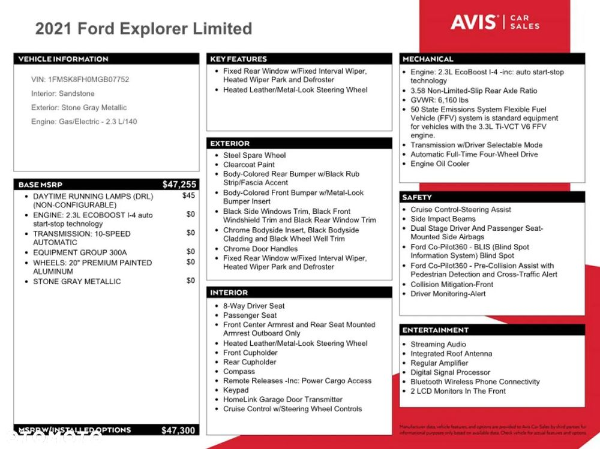

Cena:
Podana cena obejmuje szacowany koszt sprowadzenia pojazdu z dostawą pod dom.
O aucie:
Samochód ma niewielkie uszkodzenie blacharskie.
Odpala i jeździ!
Opierając się na wieloletnim doświadczeniu selekcjonujemy dla Państwa pojazdy z firm ubezpieczeniowych - gwarantuje to dokładną weryfikację uszkodzeń i pozwala wybrać pewne samochody z niewielkimi uszkodzeniami.
Nie odpowiada Ci prezentowany przez nas egzemplarz? - Skontaktuj się z nami, a przedstawimy pełną ofertę samochodów dostępnych w USA.
W czasie krótkiej niezobowiązującej rozmowy ustalimy szczegóły by wybrać pojazdy spełniające Twoje kryteria.
Spełnimy Twoje wymagania w 100%!
Naprawa:
Możemy zająć się procesem naprawy samochodu w naszym warsztacie, realizacje możecie Państwo zobaczyć na naszym kanale YouTube
https://www.youtube.com/c/TopCarImportAutzUSA
Przygotowanie do rejestracji:
Na życzenie przygotujemy komplet dokumentów potrzebnych do rejestracji, pomożemy ze wszelkimi formalnościami oraz przystosujemy auto do standardów europejskich.
O nas:
Zajmujemy się importem aut z USA i Kanady.
Zadzwoń lub odwiedź nasze biuro!
Nr tel. – Kamil S
Adres biura:
ul. Plac Wojska Polskiego
21-500 Biała Podlaska
Odwiedź nas na stronie i naszym Facebooku!
https://importzusa.com/
Niniejsza oferta ma charakter informacyjny i nie stanowi oferty w myśl Art.66, § 1. Kodeksu Cywilnego.
